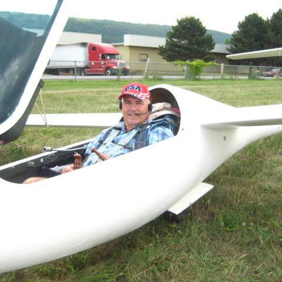
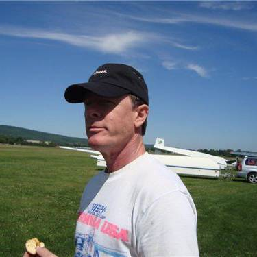
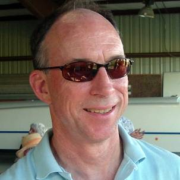
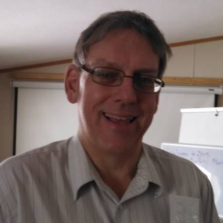
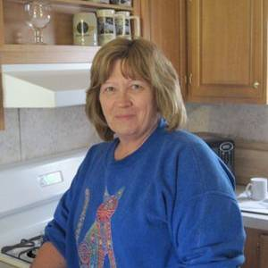
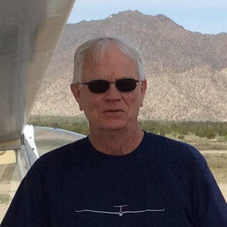
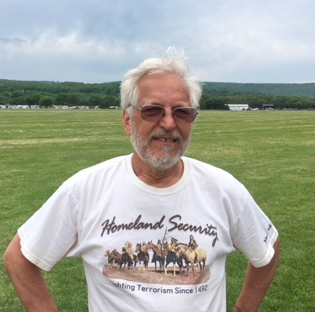

The people behind the launches
Meet the club.
Instructors, tow pilots, maintainers, organizers, and members who keep FLSC moving.
Experience shared freely
Soaring is a team sport.
The club’s strength lives in members who teach, tow, maintain aircraft, run operations, and welcome the next generation of pilots.

Jim Martin
Chief Instructor · CFI-G · DPE · Tow PilotJim began soaring at Dansville at 11, later serving as a USAF fighter and test pilot and as an experimental and certification pilot. He brings more than 15,000 flight hours and a lifelong passion for teaching.

Jeri Wallach
Club President · CFI-G · Tow PilotA powered pilot since 1991 and glider pilot since 1995, Jeri instructs, tows, and flies an HPH 304C when club responsibilities leave an opening.

Rick Lafford
Secretary · CFI-G · Tow PilotRick’s first glider flight at Dansville in 1977 set the hook. He has instructed for decades, flies an RV-6, tows, and serves as a primary club contact.
Cy Kastner
Chief Tow Pilot · Receiving Treasurer · BoardA glider pilot, longtime tow pilot, and aerospace engineer, Cy devotes substantial time to the club’s two tow aircraft and the operation behind every launch.

Rick Roman
Commercial Pilot · Disbursing TreasurerFLSC’s primary ride pilot is known for smooth introductory flights—and for keeping the fleet’s radios and electronics working.

Linda Evenski
Vice President · CFI-G · Safety Officer · BoardLinda began flying at 11 with her father, Kai Gertsen, and grew up around soaring contests. After flying gliders in England and Spain, she returned to instruction.

Joseph Somers
Pilot · Maintenance OfficerA former Navy aircraft mechanic, Joe joined after earning his glider certificate and now helps keep the club fleet current and airworthy.

Hans Schoenenberger
Glider Pilot · BoardOriginally from Switzerland and retired from an environmental instrumentation career, Hans brings energy to flying and club support work.
Judith Galbraith
Board MemberHelping guide the club and support its long-term continuity.
Eloy Yague-Spaude, PhD
Board MemberServing the club’s members and mission through board leadership.